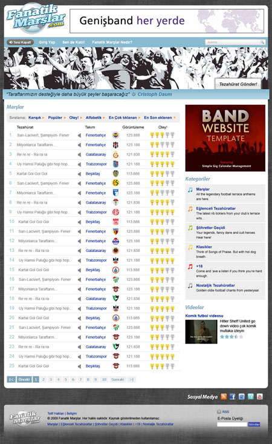
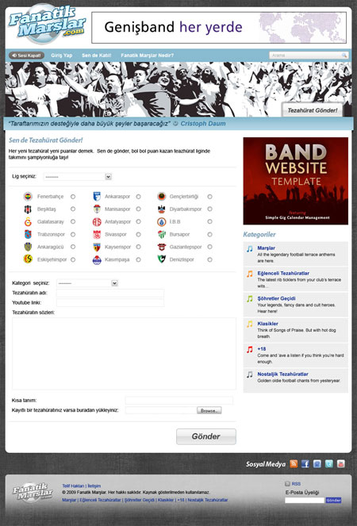
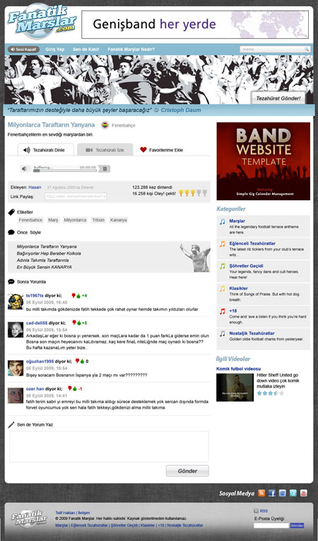
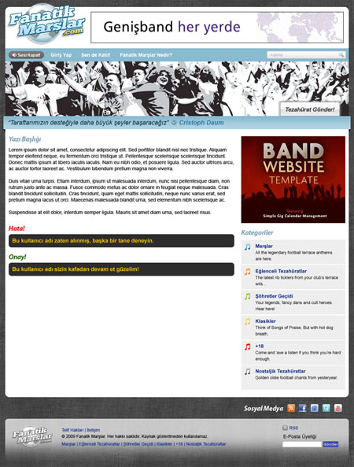

Genelde siteler yapılırken ana sayfa ve alt sayfa olarak kodlanır. Bunun
sebebi ana sayfalar tekildir, alt sayfalar ise birbirine benzeyen
yapılardan oluşur. Bu nedenle alt sayfaların bir tanesi kodlanınca diğer
sayfaların kodlanması daha az zaman alır. Bir çok freelance işinde ana
sayfa farklı alt sayfalar farklı olarak ücretlendirilir. Neyse işin bu
kısmına girmeyelim.
Eksiden sadece bir alt sayfa şablonu hazırlayıp diğer sayfa içeriklerini
o şablondaki içerik kısmına girerek tüm siteyi oluştururduk. Şimdilerde
ise neredeyse her sayfa için bir tasarım çıkıyor ve her birini ayrı ayrı
kodluyoruz.
Fanatikmarslar.com sitesini düşünürsek; bana gönderilen alt sayfa
tasarımlarından 4 tane farklı tasarıma sahip sayfa vardı. Diğerleri
bunların kopyası gibi olduğu için ben burada sizlere bu 4 alt sayfayı
nasıl kodladığımı anlatacağım.




Yukarıdaki 4 sayfada gördüğümüzü özetlersek; ilk olarak üst kısım ve alt
kısmın ana sayfa ile aynı olduğunu görüyoruz. Orta kısım ise tüm alt
sayfalarda aynı. İki kolonlu bir yapı ve sağ kolon sabit. Sol içerik
kolonu içeriği değişiyor.
Kategori Listeleme Sayfasının Kodlanması
Orta kısmı iki kolona ayırıyorum. solOrtaAlan ve icerikalaniSag adını
verdim. İki kolonu yan yana koymak için float ve genişlik tanımlarını
yapıyoruz.
Başlığımızı h1 ile tanımlıyoruz. Hem anlamlı kodlama hemde arama
motorlarına uygun kodlama açısından sayfa başlığını h1 ile tanımlıyoruz.
Diğer başlıklarıda sırası ile h2, h3, vd. şeklinde tanımlamalıyız. Şimdi
burada gerekmediği için tanımları yapmadık.
Sıralama Alanı
Sıralama kısmına yaparken bu alanı sırasız listeler ile yapmayı
düşündüm.
Dışına bir katman atamamın nedeni ardalan resmi ve diğer öğeler ile olan
ilişkileri ayarlamak içindir. Sıralama öğelerinden bir tanesine göre
sıralama yapılacak ve başındaki ok ikonu aşağı bakacağı için bu öğeye
bir sınıf tanımlıyorum diğerlerinden ayırmak için
div#siralamAlani{
background:url(../images/siralama_ard.gif) 0 0 no-repeat; height:38px;}
div#siralamAlani ul{padding:10px 0 0 10px} div#siralamAlani ul
li{display:inline;} div#siralamAlani ul li strong{display:block;
float:left; color:#828282; font:bold 14px Arial, Helvetica, sans-serif;
margin-right:3px} div#siralamAlani ul li a{display:block;
background:url(../images/genel_resim.gif) right -388px no-repeat;
float:left; font:bold 14px Arial, Helvetica, sans-serif; color:#0c2b90;
padding-right:15px; margin-right:10px} div#siralamAlani ul li
a.secili{background:url(../images/genel_resim.gif) right -354px
no-repeat;}
Listeleme Tablosu
Listeleme tablosunun bir kaç kolonu hariç ana sayfadaki tablodan bir
farkı yoktur. Benzer bir anlayış ile burayı kodlayalım.
solOrtaAlan table td p.oley tanımını niye p.oley şeklinde yapmıyoruzda
bu kadar uzun yapıyoruz derseniz, üstten gelen kalıtsal tanımlar alt
elemanları da etkiliyor bu etkiyi kaldırmak için bu şekilde tanımını
uzatarak bu tanımı daha etkin yapıyoruz. Konu hakkında detaylı bilgi
almak için tıklayınız.
Ana sayfadaki tablo ile yapının aynısı olduğu için bu kadar anlatarak
tablo faslını geçiyorum ve sayfalama kısmının kodlamasını anlatmaya
başlıyorum.
Sayfalama
Sayfalama kodlamalarını bir kaç tipi var ben burada daha önce
kodladığım bir kodu kopyalıyorum. Bu yöntemi seçmemde programcı
arkadaşım Mustafa'nın etkiside var.
auto; width:530px; padding:10px 0 0 0; clear:left} div.sayfalama ul
li{font:bold 12px Tahoma, Geneva, sans-serif; color:#fff; float:left;
list-style:none; margin:0 2px; background:#80a3b7;} div.sayfalama ul li
span{padding:5px 8px; display:block} div.sayfalama ul li a{font:bold
12px Tahoma, Geneva, sans-serif ; color:#80a3b7; text-decoration:none;
background-color:#f0f0f0; padding:5px 8px; display:block} div.sayfalama
ul li a:hover{background-color:#80a3b7; color:#f0f0f0;}
İçerik Alanı Sağ
İçerik alanının sağ kısmı aslında pek bir şey içermiyor bir banner alanı
ve kategori listesi. Her iki alanda ana sayfada mevcut olduğu için aynı
kodları buraya taşıyoruz.
Sağ banner alanı diye ayrı bir isim vermemin nedeni, kodlaması aynı olsa
da site yayına girdikten sonra ana sayfa ve alt sayfaya farklı bannerlar
atanma ihtimali olduğu için buraya farklı bir isim veriyorum ve
tanımlamamı yapıyorum.
Kategori Listeleme Alanı
Kategori listeleme alanı da ana sayfa ile birebir aynıdır. Kodu aynen
taşıyorum. Bu tip modülleri kodlarken eğer esnek kodlar isek modül
nereye konursa konsun sorun çıkarmaz. Site kodlamaya başlanmadan önce bu
tip modülleri belirleyip sabit bir genişlik vermekten kaçınmalıyız.
Burada genişlikleri aynı olduğu için sorun çıkarmazdı zaten ama farklı
projeler için söylüyorum bunu, aklınızın bir kenarında bulunsun.
Tezahürat Ekle Sayfasının Kodlanması
Sayfamızı incelediğimizde sol içerik alanında bir tezahürat ekleme
formunun diğer sayfadan farklı olduğunu görüyoruz.
Eskiden form alanlarını kodlarken tabloları kullanırdım daha rahat
gelirdi. Ancak listeler(ul) ve tanımlayıcı listeleri(dl dd dt)
kullanmaya başladıktan sonra artık tabloları kullanmıyorum.
Bu sayfadaki form yapıları iki kolonlu bir yapı olduğu için listeler ile
sayfa form yapısını oluşturabiliriz. Başlık ve altındaki paragrafı
ekliyoruz.
Tezahürat Ekle Formunun Kodlanması
Her satırın altında bir çizgi olduğu için her satırı bir katman içine
alıp bu katmanada bir sınıf tanılayarak bu işi çözebiliriz.
Bu alanı kodlarken sayısız listeleri kullandım. Listelere bir genişlik
ve float tanımı yaparak yan yana dize bilirim. Genişlikleri verirken 3
tanesini yan yana duracak şekilde ayarladım.
<ulclass="secilenLigler"><li><input
type="radio" name="takimSec" />
Trabzon
Fenerbahçe
Ankaraspor
.......
CSS kodları
ul.secilenLigler{width:575px;margin:0auto}
ul.secilenLigler li{float:left; width:170px; margin:0 20px 10px 0;
color:#828282;} ul.secilenLigler li div{float:left} ul.secilenLigler li
label{position:relative; top:8px} ul.secilenLigler li input{float:left;
position:relative; top:8px; margin-right:10px}
Her takım alanı için radyo butonu, logo için bir katman, takım adı için
bir label tanımladım ve bunları yan yana dizmek için float:left tanımı
kullandım. label ve input için kullandığım postion:relative tanımı ve
top değerleri bu öğeleri diğer öğeler ile yatayda aynı hizaya getirmek
içindir.
Yukarıda bahsettiğim gibi form alanlarını kodlarken sayısız
listeleri(ul) kullanıyorum burada da
Böylece Tezahürat Ekle sayfamızı bitirmiş oluyoruz.
Tezahürat Dinle Sayfasının Kodlaması
Tezahürat dinle sayfası iki sekmeli bir yapıdan oluşuyor ve dinleme ve
izleme seçenekleri iki ayrı sekme içinde yer alıyor.
Başlık ve açıklama kısmını kodluyoruz. Başlık ve ilk paragraf bir önceki
sayfa ile aynı. Başlık yanındaki logo ve takım ismi kısmına biraz
değinelim.
<divid="dinleTakimi"><div
class="logoTrabzon">Trabzon
Trabzon
Logo için iki ayrı katman oluşturuyorum. Bunun nedeni logoların geneli
için bir sınıf tanımlıyorum. Ayrıca ikinci katmanda her bir takım için
tanımlanacak özellikler için. CSS kodunu yazarsak;
Burada şöyle bir şey var. Başlığın uzunluğu belli olmadığı için sadece
logo ve takım adına float tanımı ve genişlik tanımı yaptık. Böylece
başlık uzunluğu ne olursa olsun başlık ve logo kısmı devamlı yan yana
duracaktır.
Sekmeleri kodlarken daha önce yazdığım jquery ile sekme yapımını
anlattığım makaledeki gibi yapacağız.
Buradaki tek fark favoriler kısmını sekmeli yapının dışında tutmak için.
jquery'nin :not() fonksiyonunu kullandık. Bu fonksiyonun anlamı bu
elementlere uygula not fonksiyonu ile belirtilen elemana uygulamadır.
Tezahürat bilgi alanında; ekleyen, kaç kez dinlendiği veya izlendiği,
paylaşım linki ve kaç kişinin oley çektiği bilgileri yan yana yer
alıyor.
Bu alanı bir katman içine alıp ardalan rengini bu katman veriyoruz.
İçine sol ve sağ kolonlar için iki katman oluşturup içerikleri buraya
koyuyoruz. İçerikleride bir paragraf içinde kodluyoruz.
p{margin:0 0 15px 0} #tezahuratBilgiSag p span{float:left;}
Etiketler, Önce Söyle, Sonra Yorumla vb. başlıkların ikonlarını sprite
tekniği ile resimlerini hazırlayıp başlıkların başına ardalan resmi ile
koyuyoruz.
Etiketler için padding ve ardalan rengi tanımlıyoruz. hover hallerini
hazırlıyoruz.
Önce söyle başlığınıda diğer başlıklar gibi hazırlıyoruz. İçeriği
blockquote içine koydum. Aslında bunun için de bir katman açıp
koyabilirdik, tercih meselesi. Ardalan resmini sağ alta sabitliyoruz.
blockquote.tezahuratMetni{background:#eee
url(../images/tezahurat_zem.gif) right bottom no-repeat; padding:20px
50px 20px 30px; margin-bottom:1px; font-style:italic}
Yorum Alanı
Yorum alanın solda avatar'ın(küçük resim) ve sağda alt alta içeriklerin
bulunduğu iki kolonlu bir yapıya sahip .
float ve genişlik tanımlarını yaparak öğeleri yerleştiriyoruz. Burada
farklı durumda olan kısım yorum oylama kısmıdır. Yorum oylama kısmını
ayrı bir katman içine alıp yorum yazanın yanında durması için
position:relative ve float:left tanımı ile ile ayırıyoruz. Artı, eksi ve
puan kısmını bir liste şeklinde kodluyoruz.
Son olarakta "Sende Yaz" kısmını kodluyoruz. Başlığı yukarıdaki
başlıklar gibi yazıyoruz. Yorum yazma kısmına bir textarea yapıp
genişlik, yükseklik ve kenar çizgisi tanımlarını yapıyoruz.
Site kodlarken site içerisinde genelde bir şablon sayfası oluşturulur.
Bu sayfa site içinde olabilmesi mümkün elemanların bulunduğu bir
sayfadır. Tasarımcı bu sayfayı daha sonra eklenmesi durumunda
hazırlayarak sitenin gelişmesi durumlarınıda düşünmüş olur. Böyle site
yapısından kopmamış oluruz.
Fanatikmarşlar.com'un şablon sayfası biraz daha sade oldu. Normalde
paragraflar, tablo yapısı, resimler, listeler, vb. yapıları içerir.
Fanatikmarşlar.com'un şablon sayfasına baktığımızda başlık, paragraf ve
uyarı mesajları şeklinde oluşmaktadır.
#anaKapsulh1.hata{color:#e40000}
anaKapsul h1.onay
Bilgi kutusunu oluştururken yuvarlak kenarlı olduğu için, iki elamana
ihtiyaç var. Bunun için kapsayıcı div ve içine paragrafa koyduk.
<divclass="bilgiKutusu">
Bu kullanıcı adı zaten alınmış, başka bir tane deneyin.
Alt sayfaların kodlamasını böylelikle bitirdik. Site kodlarken değişik
tasarımlarda olsa genelde benzer yapılar olduğu için yaklaşık olarak
kodlarımız bu şekilde olacaktır.
Sonuç
Site kodlarken kodlarımı Adobe Dreamweaver ile yazıyorum. Kodlamanın bir
çok yerinde FireBug kullanıyorum, daha doğrusu firebug'ı kapatmıyorum.
Ayrıca test amaçlı ietester programını kullandım. Daima ie6'da test
ettim.
Site kodlarken bir çok yöntem kullanılabilir. Ben kodlarımı yazarken
devamlı bu alanı kodlarken nasıl daha iyi kodlarım, ileriye yönelik
değişikliklerde nasıl sorun yaşamam, arama motorları standartlarına
nasıl uyarım düşüncesi ile kodluyorum. Yazdığım kodlara genellikle daha
sonra baktığımda beğenmiyorum. Devamlı en iyi hedefleyince eski
kodlarımı beğenmiyorum. Bence olması gereken bu çünkü sektör daima
kendini yeniliyor ve yeni özellikler çıkıyor biz devamlı bunları takip
edip yeni projelerimizde kullanmalıyız.
Çok uzun süredir tasarladığım ama ancak nasip olan bir işi bitirmenin
sevinci ile bu makalemide bitiriyorum. Daha güzel makalelerde buluşmak
dileğiyle kendinize iyi bakın.


Yorumlar !